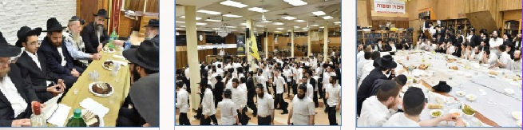

יום ראשון, י”ב אלול אחרי תפילת שחרית במנין הרבי שליט”א מלך המשיח, מתקיימת בשולחן
אחרי תפילת שחרית במנין הרבי שליט”א מלך המשיח, מתקיימת בשולחן שמשמאל לארון הקודש התוועדות חסידית וחגיגת הבר מצווה של הת’ מנחם מענדל שי’ מולקנדוב. חתן הבר מצווה חוזר על המאמר כנהוג, והתמימים מברכים אותו באמירת ‘לחיים’ שיזכה להמשיך לחגוג את יומו הגדול בבית המקדש השלישי.

אחרי תפילת שחרית במנין הרבי שליט”א מלך המשיח, מתקיימת בשולחן שמשמאל לארון הקודש התוועדות חסידית וחגיגת הבר מצווה של הת’ מנחם מענדל שי’ מולקנדוב. חתן הבר מצווה חוזר על המאמר כנהוג, והתמימים מברכים אותו באמירת ‘לחיים’ שיזכה להמשיך לחגוג את יומו הגדול בבית המקדש השלישי.
שיעור הדבר מלכות הקבוע לאחר תפילת מנחה, מתקיים כמידי יום בשולחן שמשמאל לארון הקודש, בהשתתפות תמימים רבים. את השיעור מוסר השבוע הת’ שמואל שי’ זלמנוב, שלומד עם המשתתפים את שיחת ש”פ כי תבוא ה’תנש”א, בה מגלה הרבי כי מציאותו ומהותו של כל יהודי היא ‘ביכורים’ של הקב”ה, ומקומו האמיתי הוא ‘לפני ה’ אלוקיך’, ובהתאם לכך כל פרטי עבודתו צריכים להיות בשלימות.
מכיוון שאתמול היו השמים מעוננים רוב הזמן, נדחה קידוש לבנה ללילה זה. לאחר תפילת ערבית במנין הרבי שליט”א, יוצא הקהל הקדוש לרחוב מול 770 לבקש את אלקיהם ואת דוד מלכם, בהתגלות הרבי מלך המשיח תיכף ומיד. כמובן שלאחר מכן נפתחים ריקודים בשמחה גדולה, כהוראת הרבי שליט”א, שנמשכים מספר שעות אל תוך הלילה.
יום שני, י”ג אלול
תמימים ראשונים מקבוצה תשע”ח מתחילים בימים אלו להגיע ל–770, והם מתקבלים בשמחה רבה, על ידי אחיהם התמימים. לאחר תפלת מעריב, מתקיים כמידי יום שני, סדר לקוטי שיחות באחדות, במהלכו כבר ניתן לראות את התמימים הראשונים שהגיעו לקבוצה מצטרפים בחיות. לאחר מכן נערכות ההגרלות בין המשתתפים הרבים, והסדר נחתם בהכרזת הקודש ‘יחי’.
בסביבות השעה 23:00 מתחילה ההתוועדות הקבועה בפינה הצפונית–מזרחית של בית חיינו, במהלכה מתחזקים הנוכחים באמונה וביטחון בנצחיות חייו של מלך המשיח, ובצורך החיוני לעשות את כל שביכלתנו להביא לזירוז התגלותו.
יום שלישי, י”ד אלול
אחרי תפילת שחרית, מתקיימת בשולחן שמשמאל לארון הקודש התוועדות לת’ שלום דובער שי’ בלוך - שליח הרבי שליט”א לס. פאולו, לרגל יום היכנסו בעול המצוות. התמימים מאחלים לו שיזכה לנצל את הכוחות הגדולים אותם קיבל ביום ומקום קדוש זה, להשלמת השליחות היחידה - ולקבלת פני משיח צדקנו בפועל.
היום זה קורה! לקראת תפילת מנחה, וכן לאחריה, מתחילים לנחות ב–770 בהמוניהם תלמידי התמימים מהקבוצה החדשה - קבוצה ה’תשע”ח!
אין מילים שיוכלו לתאר את השמחה והאושר - כאשר משאת הנפש, החלום של כל תמים מיום היוולדו, הרגע לו ציפה עשרים שנה, ושקדמו לו חודשים של הכנה, מתגשם - והתמימים נכנסים בשערי 770, על מנת שלא לצאת מן המקדש לעולם ועד… התמימים מתקבלים על ידי הותיקים בחיבוקים ונשיקות, בשמחה ובהתלהבות ונכנסים בשמחה ובקולע’ס אל הבית - שמעכשיו יהיה ביתם, לא רק במליצה או בשאיפה, אלא בפועל ממש. שנה תמימה!
עד מהרה מתמלאת הרחבה בקדמת 770 בעשרות תמימים שפותחים במעגלי ריקודים סוערים, מתוך שירה אדירה “קבוצה עי”ן חי”ת… עם הרבי מלך המשיח שליט”א!”
הריקודים נמשכים עד לעת בה מראים מחוגי השעון על השעה 15:10 בדיוק, או אז מוחלפת המנגינה באחת, ושירת ‘יחי’ עוצמתית פורצת מפי כולם. הקהל הגדול, המורכב ברובו מתלמידי התמימים ה’טריים’ וה’וותיקים’, נעמד הכן מתוך שירה וזמרה לכניסתו של הרבי שליט”א מלך המשיח לתפלת מנחה, ובליבו האמונה הציפיה והביטחון הוודאיים, שבוודאי נראה את מלכנו בעיני בשר נכנס לתפילה, ומעודד בעוז את השירה בידו הק’ ברגע זה ממש!
שיעור הדבר מלכות שמתקיים לאחר תפילת מנחה, גודל בכמות המשתתפים באופן בולט במיוחד - עם הצטרפותם של עשרות תמימים מה’קבוצה’ החדשה. למשתתפים מוגשת סעודה כיד המלך שנתרמה על ידי חתן שמתחתן הלילה בארץ הקודש, והחליט לקיים את המנהג עליו מעורר הרבי שליט”א בדבר מלכות של שבוע שעבר - לערוך ‘סעודת חתנים’, בתרומה לשיעור הקבוע.
הלילה נכנסים לחג הגדול, ט”ו אלול - יום התייסדות ישיבת תומכי תמימים. וכדבריו הקדושים של מלכנו משיחנו, “כיצד יתכן הדבר - שיעבור יום סגולה כזה, יום התייסדות (הולדת) דתומכי תמימים ללא התוועדות וחגיגה מיוחדת?!” כמובן שב–770 לא עובר היום בשקט, והתוועדויות רבות וחגיגיות מתקיימות.
בסדר חסידות ערב מתקיימת התוועדות מיוחדת בחלקו האחורי של בית חיינו, עם חברי הנהלת ישיבת תומכי תמימים המרכזית 770.
בפינה הצפונית מזרחית של בית חיינו מתקיימת חגיגת הבר מצווה של הת’ שלום דובער שי’ בלוך, יחד עם אביו הרה”ח אריה שי’ בלוך - שליח הרבי שליט”א בס. פאולו, שמתוועד עם הקהל במשך שעות ארוכות.
מתחת לבימת ההתוועדויות יושבים התמימים מקבוצה ע”ז ומתוועדים בחיות, ומתעוררים יחד להתחזק בענייני משיח וגאולה, ובצורך לפרסם לכל העולם כולו כי הרבי שליט”א מלך המשיח חי וקיים פה ב–770, בפשטות ממש. החלטות טובות מתקבלות בשפע, הניגונים קולחים בשטף, וההתוועדות נמשכת עד קרוב לסדר חסידות בוקר.
יום רביעי, ט”ו אלול
היום לפני 120 שנה נוסדה ישיבת תומכי תמימים בליובאוויטש, והוקם צבא ‘חיילי בית דוד’, והיום הוא יום בואם של תלמידי התמימים מה’קבוצה’ החדשה - קבוצה ה’תשע”ח - לשהות וללמוד במשך שנה שלימה במחיצתו של מלך המשיח. היום המיוחד הזה מנוצל על ידי התמימים בהוספה בלימוד מתוך שקידה והתמדה, ובהתוועדויות בכל רגע פנוי.
עם בואם של תלמידי התמימים מהקבוצה החדשה, מתקיים ‘סדר השכם’ מיוחד. כרבע שעה לפני סדר חסידות בוקר משכימים התמימים קום, ומתיישבים לעסוק בלימוד ענייני משיח וגאולה. החיות הרבה שמביאים איתם התמימים החדשים מורגשת היטב, ועד מהרה נתפסים הספסלים, וקולות הלימוד ממלאים את חלל האויר.
בסדר נגלה בוקר מתקיימת התוועדות ספונטנית עם הרה”ח יוסף יצחק שי’ מייזליש - שליח הרבי שליט”א מלך המשיח במקסיקו, שמתוועד עם התמימים על מעלת היום המיוחד הזה, ועל החובה להפנים את תפקידנו - לנצח את אלו ‘אשר חרפו עקבות משיחך’, ולהביא להתגלותו של הרבי בפועל ממש.
במשך היום מגיעים ל–770 רבים מאנ”ש יחד עם ילדיהם, לביקור ותפילה בישיבת תומכי תמימים המרכזית - לחזור ולהיזכר באווירה המיוחדת של תומכי תמימים, ולהתעורר בתפקידם כתמימים לעד.
משך זמן לאחר תפילת ערבית, מארגנים התמימים ממטה שירה וזמרה את מרכז 770, ומפנים את הספסלים לטובת רחבת הריקודים הענקית. מצות היום ב’כאדאראם’, ופה ב–770 מקיימים אותה הרבה מעבר למצופה. רגעים ספורים לאחר שהתזמורת פוצחת בנגינה הסוערת, נסחפים התמימים בהמוניהם אל עבר מעגלי הריקודים בשמחה פורצת גדר. כמובן שלאווירת השמחה תורמים גם אמירת ה’לחיים’, הקולע’ס ודגלי המשיח - כרגיל בכגון דא.
ועד כמה שיקשה לתאר את השמחה - קשה עוד יותר יהיה לתאר את מה שהתחולל ברגע שהנגן החסידי עובר למנגינה המוכרת שהפעם קיבלה את המילים ‘קבוצה ע”ח עם הרבי מלך המשיח שליט”א’. פתאום הופכים כל התמימים לגוש אחד סוער, חדשים עם ישנים, וכולם מפזזים ומכרכרים כמשפחה אחת - משפחת ‘קבוצה ע”ח’. גם אם חלקם מתכננים בתכנית הגלותית להימצא בשנה הבעל”ט בנקודות שליחות שונות - הרי ברגעים כאלו המילים ‘תכנית גלותית’ נמחקות מהלקסיקון. כעת ישנה תכנית אחת ויחידה - לכולנו ברור שאת קבוצה ע”ח נעביר יחד עם הרבי שליט”א בבית המקדש השלישי…
ומהריקודים - להתוועדויות הפעילות ברוב עם. על בימת ההתוועדויות יושבים התמימים מקבוצה תשע”ו, ביניהם רבים שחזרו בימים האחרונים ממקומות שליחותם בשנה האחרונה, ומתוועדים בחיות ובשטורעם. תלמידי התמימים מקבוצה תשע”ז וכן מקבוצה תשע”ח מתוועדים בקבוצות, זאת מלבד התוועדויות נוספות שמתקיימות בכל פינות הזאל.
יום חמישי, ט”ז אלול
את שיעור גאולה ומשיח העיוני השבועי שמתקיים לאחר תפילת מעריב, מוסר השבוע הת’ מנחם מענדל רוזנפלד, שמסביר את מהותה ועניינה של ‘מלחמת בית דוד’ - המלחמה המוטלת עלינו תלמידי תומכי תמימים.
לאחר מכן נפתח בסערה ליל שישי ב–770, ועם כמות גדולה כל כך של תמימים שנמצאים כאן כעת - אין כמעט ספסל שלא זוכה להתוועדות תוססת. בפינות שונות מתוועדים התמימים מקבוצה תשע”ה, תשע”ו ותשע”ז. כמו כן, בקדמת 770 ההתוועדות של קבוצה תשע”ח מלאה וגדושה, כאשר זו הפעם הראשונה עבורם לשבת כל הקבוצה יחד בליל שישי.
כמידי שבוע יוצאים תמימים רבים במהלך הלילה לפעילות ‘יפוצו מעיינותיך חוצה’ - חלוקת העלון השבועי ‘אחרית הימים’ במאות בתי כנסת בכל רחבי ניו–יורק והסביבה.
יום שישי, י”ז אלול
בסדר חסידות בוקר - ‘הסדר של הרבי’ - בוחרים תמימים רבים להגות בשיחת הדבר מלכות השבועי, בו מגלה הרבי שכל יהודי הוא בבחינת ‘ביכורים’ אותם צריך להביא ‘לפני ה’ אלקיך’.
אחרי תפילת שחרית, מכניס הרה”ח מנחם אריאל שי’ את בנו בבריתו של אברהם אבינו, ולאחר מכן מזמין את המשתתפים לסעודת מצווה ואמירת ‘לחיים’.
לאחר מכן יוצאים התמימים לפעילות מתוגברת במסלולי המבצעים. על הצוותות נמנים התמימים הותיקים יחד עם מאות התמימים החדשים שבקבוצה, המוסיפים חיות גדולה במבצעים ומעוררים עוד ועוד יהודים לנצל את שהותו של המלך בשדה ולדרוש ממנו את התגלותו תיכף ומיד ממש.
בשעות הצהריים מותקנים בלובי הכניסה לבית חיינו ארונות חדשים למעילים, בהם מורכבים גם עשרות תאים לרווחת המתפללים.
ליל ש”ק פרשת כי תבוא,
יום הבהיר ח”י אלול
יום הולדת ‘שני המאורות הגדולים’ - הבעל–שם–טוב ואדמו”ר הזקן, ויום התחלת הלימודים בישיבת תומכי תמימים בליובאוויטש.
לקראת קבלת שבת מתמלא 770 באנ”ש והתמימים השוקעים בלימוד חסידות, והעמקה מיוחדת בדבר מלכות השבועי המופלא - אשר ב–770 נהיה מוחשי בהרבה, “והכהן אשר יהיה בימים ההם משגיח על כל תנועה שלו”…
הקובץ השבועי מבית ועד ‘חיילי בית דוד’ נקרא ‘חג משולש’ - כפי שהתבטא עליו הרבי הריי”צ: “חג משולש, הוא יום ההולדת של הבעש”ט, הוא יום ההולדת של רבנו הזקן והוא התחלת העבודה דהשנה החדשה”. בהתאם לזה מודפסים בקובץ קטעי שיחות מהרבי הריי”צ על ח”י אלול בליובאוויטש, אגרת קודש מהרבי הריי”צ על הקמת ישיבת תומכי תמימים בשליחות השגחה פרטית מהבעש”ט, וכן מאמר מרתק מהרה”ח יהושע דובראווסקי ע”ה בקשר עם הנסיעה לחודש החגים.
החיות והשמחה של התמימים מהקבוצה החדשה מורגשים היטב ומטלטלים גם אותנו ה’ותיקים’, יחד עם שאר התמימים ואנ”ש, ומעוררים בנו את תחושת ה’אשרינו’ על שזכינו להמצא כאן. שירת ה’יחי’ שנפתחת בסערה, די דומה בעוצמתה לשירה של תשרי שאותה נזכה לשמוע עוד מעט, בשבועות הקרובים… ולאחר “לכה דודי” - עולה השירה וגוברת ביתר שאת וביתר עוז, ומבין המילים ניתן לשמוע את קולות ליבם של עשרות בנים ששבו הביתה אל אבא, והם מבקשים ממנו מעומק הלב: רצוננו לראות את מלכנו!
יום הש”ק פרשת כי תבוא,
יום הבהיר ח”י אלול
יום הולדת ‘שני המאורות הגדולים’.
בסדר חסידות של שבת בבוקר מתקיים כמידי שבת שיעור דבר מלכות ענק, מתוך שפע רב, כהכנה לתפילה עם הרבי שליט”א.
לרגל יום הבהיר ח”י אלול מוציאים בקריאת התורה את ספר התורה לקבלת פני משיח צדקנו, והחתנים הרבי זוכים לעלות בו.
לאחר תפילת שחרית מתכוננים אנ”ש והתמימים, חדשים וותיקים, להתוועדות קדשו של הרבי - התוועדות שבה בעזרת ה’ נראה ונשמע את מלכנו משיחנו, יחד עם כל בני ישראל. מספר דקות לפני השעה 1:30 פורצת שירת ה’יחי’ בעוז.
ברגעים שעד ההתגלות, מחולקים בין הקהל דפי שיחות שבת זו בשנת תנש”א, ורבים מעיינים בהם ונכנסים לאווירת ההתוועדות המיוחדת. מתענגים ממתיקות הביאור על מעלתו של כל יהודי ויהודי, ומחזקים את הביטחון בהתגשמות הנבואה הברורה - “שתיכף ומיד באה, נמשכת ומתגלית הגאולה עוד במקום זה, בברוקלין, ושם גופא - ב”סעווען סעווענטי”, כפי שה”עולם” מכנה זאת”.
בהמשך להתוועדות עם הרבי מתוועדים עם החתנים שי’, שעומדים להתחתן בשבוע הבעל”ט ולהקים בית חב”ד חדור בשליחות היחידה.
מוצאי שבת קודש
תפילת מעריב מתקיימת בזמן צאת השבת בשעה 7:56, ולאחריה נערכת ההבדלה. לאחר מכן מוקרנים מראות קודש מהרבי שליט”א מלך המשיח - מתחיל מעידודי ה’יחי’ במוצאי שבת ח”י אלול תשנ”ג, וממשיך בתוכניות הוידאו השבועיות מבית ‘השיחה השבועית’ ו’לראות את מלכנו’.
מיד לאחר מכן מתחילים באיסוף הספרים, סידור הספסלים, וארגון בית הכנסת לקראת ההתוועדות המרכזית לרגל ח”י אלול - יום הולדת ‘שני המאורות הגדולים’ - שע”י הגבאים דבית הכנסת ובית המדרש ‘בית רבינו שבבבל’.
בשעה 9:45 מתחילה ההתוועדות המרכזית, בהקרנת מראות קודש מהרבי שליט”א. לאחר מכן עולים הנואמים בזה אחר זה, ומתוועדים עם הקהל על מעלתו המיוחדת של יום זה, ועל תוספת הכח שצריכים לקחת ממנו לעבודה להבאת הגאולה (תיאור מפורט ותוכן הנאומים - ראה במדור החדשות).
עם סיום חלקה הרשמי של ההתוועדות מתיישבים ברחבי הזאל להתוועדויות פרטיות, להוריד את הדברים האמורים לחיי העבודה בפועל.
יחי אדוננו מורנו ורבינו מלך המשיח לעולם ועד!